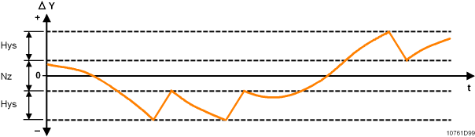

Three-position control (AO - subsystem-specific extension)
The Analog Output (AO) object supports following properties of the subsystem-specific extension Three-position control.
Startup synchronization |
|
| |
|---|---|---|---|
'Startup synchronization' defines the method for synchronizing the actuator stroke mode at startup. Synchronization is initiated automatically at startup. | |||
None |
| ||
Single open | Opening command during 1.5 x rise time. | ||
Single close | Closing command during 1.5 x rise time. | ||
Property ID: 4992 | |||
End position synchronization |
|
| |
|---|---|---|---|
'End position synchronization' defines the synchronization method for actuator stroke model upon reaching the end position (0% or 100%). | |||
None | Does not synchronize | ||
Continuous | Always synchronizes at 0% or 100% | ||
Single | Synchronizes one time if PrVal is at 0 or 100% during 1.5 x rise or fall time | ||
Every 10 min | Synchronizes every 10 minutes if PrVal is at 0 or 100% during 1.5 x rise or fall time | ||
Every 20 min | Synchronizes every 20 minutes if PrVal is at 0 or 100% during 1.5 x rise or fall time | ||
Continuous open | Always synchronizes at 100% | ||
Continuous close | Always synchronizes at 0% | ||
Single open | Synchronizes one time if PrVal is at 100% during 1.5 x rise time (100%) | ||
Single close | Synchronizes one time if PrVal is at 0% during 1.5 x fall time (0%) | ||
Open every 10 min | Synchronizes every 10 minutes if PrVal is at 100% during 1.5 x rise time (100%) | ||
Close every 10 min | Synchronizes every 10 minutes if PrVal is at 0% during 1.5 x fall time (0%) | ||
Open every 20 min | Synchronizes every 20 minutes if PrVal is at 100% during 1.5 x rise time (100%) | ||
Close every 20 min | Synchronizes every 20 minutes if PrVal is at 0% during 1.5 x fall time (0%) | ||
Property ID: 4991 | |||
Function command ✳ |
|
| |
|---|---|---|---|
"Function command" allows triggering the running of a command such as synchronize or calibrate. The running of the command may take some time. During this time the actuator will be controlled by the synchronization or calibration command and no target state can be performed. | |||
Ready | The actuator is ready for a new request. | ||
Synchronize | Forces a synchronization with the value defined in the property "Startup synchronization". | ||
Calibrate | Same as Synchronize for DXRx hardware. For PL-Link devices, provides a separate calibration sequence. | ||
Rise time from 0 to 100% ✳ |
|
|
|---|---|---|
"Rise time from 0 to 100%" defines the time used for the signal to go from 0 [%] to 100 [%]. Range: 63...65535 [0.1 s] | ||
Fall time from 100 to 0% ✳ |
|
|
|---|---|---|
"Fall time from 100 to 0%" defines the time used for the signal to go from 100 [%] to 0 [%]. Range: 63...65535 [0.1 s] | ||
Hysteresis |
|
|
|---|---|---|
'Hysteresis' determines the hysteresis in the stroke model. | ||
Property ID: 4989 | ||
Neutral zone ✳ |
|
|
|---|---|---|
"Neutral zone" defines the insensitive area of the controller around the setpoint. If the absolute sum of the control difference is smaller than half the neutral zone ("Setpoint" – "Controller input" < "Neutral zone"/2), then the manipulated variable is tracked during 7 process cycles at "controller output" (Present-Value). Afterwards, the "controller output" is constant until the control difference is outside the "neutral zone". The "controller output" takes over again the manipulated variable calculated. "Neutral-Zone" will not be used if Controller-Type = staged "Units for differential value" indicates the engineering units of "Neutral-Zone". Range: 0...40 | ||

Control action |
|
| |
|---|---|---|---|
"Control action" defines the logic for the rise and fall command. | |||
Direct | Normal logic: Is opened for a command from 0 to 100 %. | ||
Reverse | Inverted logic: Is closed for a command from 0 to 100 %. Can be used, for example, to match the valve rotation to the mounting position of the actuator. | ||
Property ID: 4988 | |||
Reaction time |
|
|
|---|---|---|
"Reaction time" defines the additional runtime between the actuator end position and the point at which the valve begins to open. Note: Range: 0...500 [0.1 s] | ||
Property ID: 4987 | ||
Switchover delay |
|
|
|---|---|---|
"Switchover delay" defines the length of the break before a change in direction commences. Range: 0...255 [0.1 s] | ||
Property ID: 4986 | ||
Progress value |
|
|
|---|---|---|
"Progress value" displays the current valve position. Read only. Unit: [%] | ||
Property ID: 5083 | ||